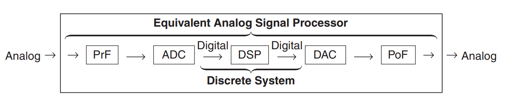
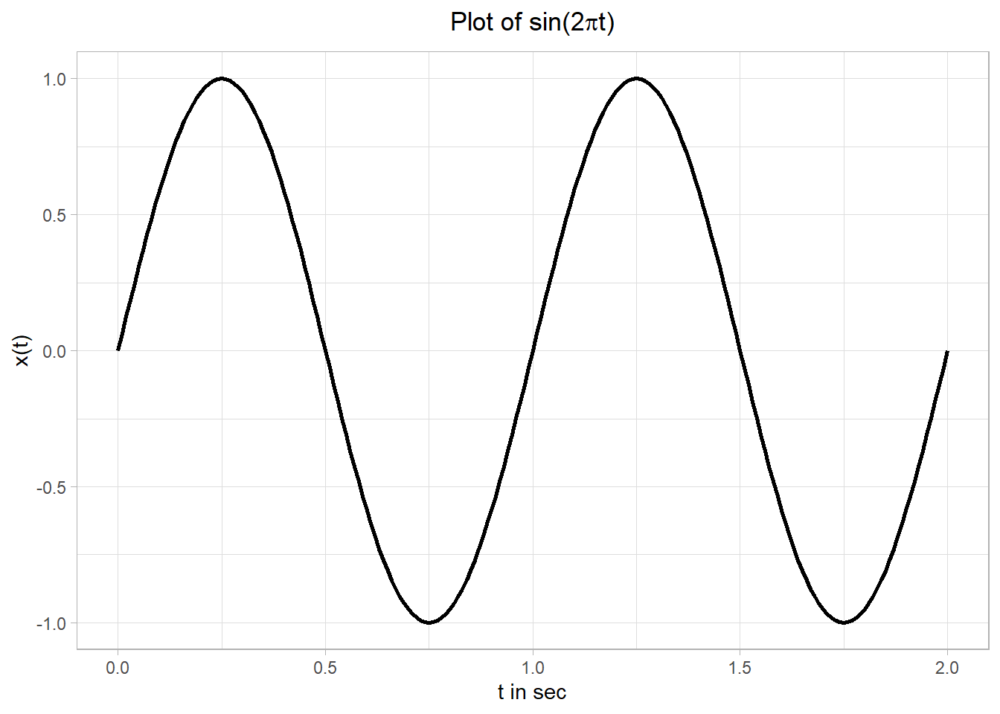
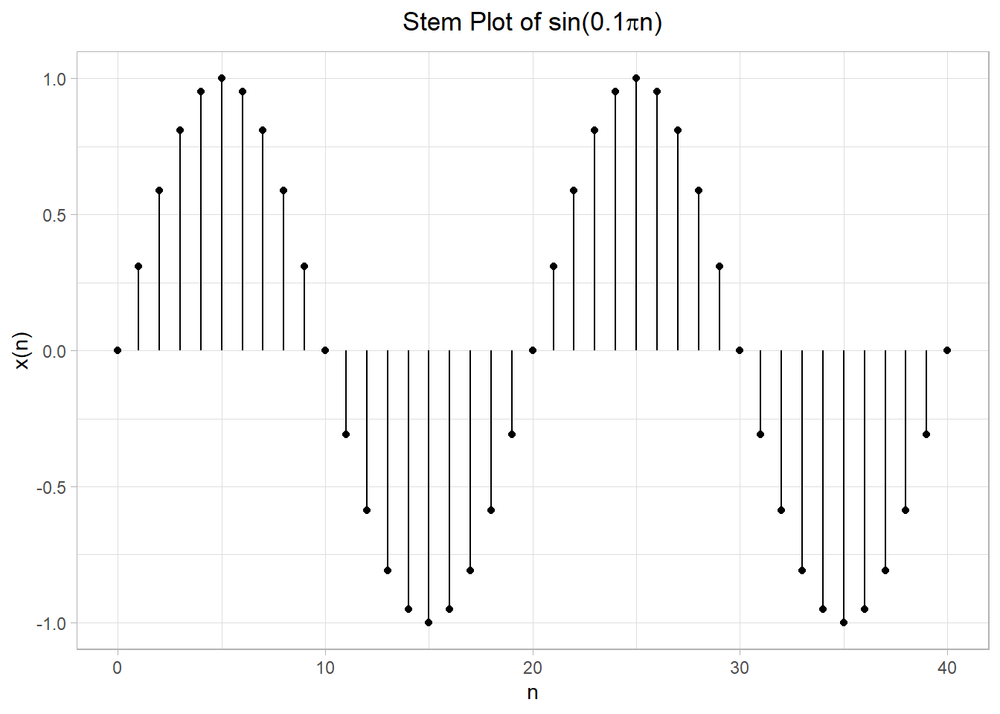
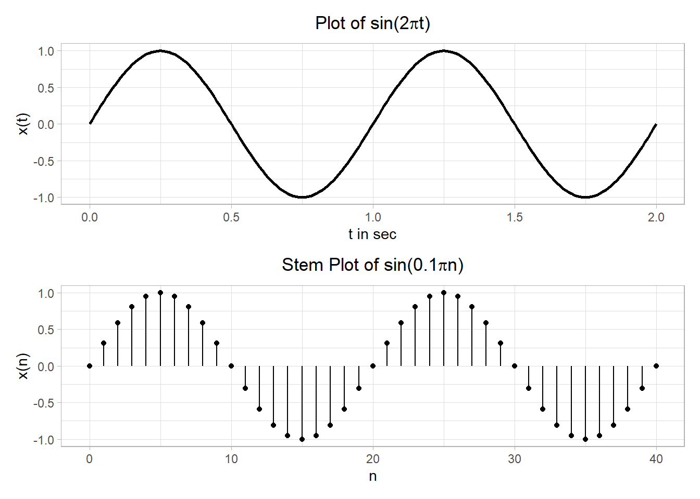
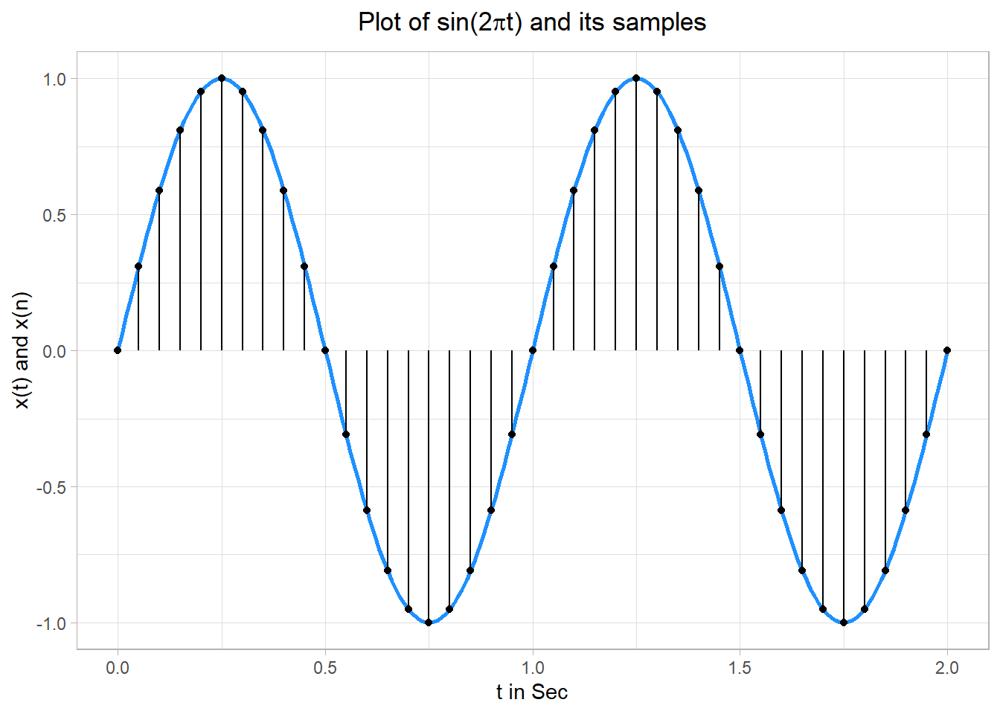

# Set up
library(tidyverse)
library(here)
t <- seq(from = 0, to = 1, by = 0.01)
k <- seq(from = 1, to = 5, by = 2)Introduction to Digital Signal Processing using R
Important
In this notebook, we attempt to make R implementations of the examples covered in chapter 1: Introduction in the book (Ingle and Proakis 2016):
Digital Signal Processing Using MATLAB®: A Problem Solving Companion, International Edition
As such, please refer to the book above for in depth explanations of the underlying concepts.
This chapter introduces readers to the discipline of signal processing and presents several applications of digital signal processing, including musical sound processing, echo generation, echo removal, and digital reverberation.
1 Overview of digital signal processing
Signal processing is an operation designed for preprocessing, extracting, enhancing, storing, and transmitting useful information. In an engineering context, signals are carriers of information, both useful and unwanted. Therefore, extracting or enhancing the useful information from a mix of conflicting information is the simplest form of signal processing.
Most signals in practice are analog signals i.e they vary continuously in time and amplitude. These signals can be processed directly by passing them through an analog signal processor or using digital hardware as represented below:

Tip
PrF represents a prefilter or an antialiasing filter, which conditions the analog signal to prevent aliasing.
ADC: Analog to Digital Converter which converts analog signals to a stream of binary numbers.
DSP: Digital Signal Processor - a general purpose computer or processor or digital hardware that performs signal processing.
DAC: Digital to Analog Converter which performs the first step towards producing an analog signal i.e produces a staircase waveform from a sequence of binary numbers.
PoF: Post Filter smooths out the staircase waveform into the desired analog signal.
One might ask, why process signals digitally as opposed to simply passing them through an analog signal processor? The answer lies in the many advantages of DSP. Some of them include:
- DSP operations are based solely on additions and multiplications, leading to extremely stable processing capability—for example, stability independent of temperature.
- DSP can be done on software making it convenient to develop, test, and modify in real time.
Tip
Please see the reference text for more advantages.
2 A brief introduction to R for Digital Signal Processing
Many users think of R as a statistics system. Taking a page out of Hadley Wickham’s book (literally; see Advanced R) and all the incredible things we see daily in the R community (#rstats Twitter), we think of R as a beautiful and elegant language well designed for Data Science, Finance, Genetics, High Performance Computing, Machine Learning, Medicine, Pharma & Medical Imaging, Social Sciences, Spatial Statistics, Generative Art and many more! This is because R’s capabilities can be easily extended through user-created packages and R can easily connect to high-performance programming languages like C, Fortran, and C++.
In this section, we’ll undertake a brief review of R in the context of signal processing.
Tip
Below are some useful resources to get you started with R:
Example 1.1
Consider the following sum of sinusoidal functions:
\[ x(t) \ = \ sin(2 \pi t) + \frac{1}{3}sin(6 \pi t) + \frac{1}{5}sin(10 \pi t) \ = \ \sum_{k = 1, 3, 5}\frac{1}{k}sin(2 \pi k t), \ \ \ 0 \leq t \leq 1 \]
Using R, we want to generate samples of \(x(t)\) at time instances 0:0.01:1.
There are numerous ways to approach this in R. We’ll consider a few.
k[1] 1 3 5t [1] 0.00 0.01 0.02 0.03 0.04 0.05 0.06 0.07 0.08 0.09 0.10 0.11 0.12 0.13 0.14
[16] 0.15 0.16 0.17 0.18 0.19 0.20 0.21 0.22 0.23 0.24 0.25 0.26 0.27 0.28 0.29
[31] 0.30 0.31 0.32 0.33 0.34 0.35 0.36 0.37 0.38 0.39 0.40 0.41 0.42 0.43 0.44
[46] 0.45 0.46 0.47 0.48 0.49 0.50 0.51 0.52 0.53 0.54 0.55 0.56 0.57 0.58 0.59
[61] 0.60 0.61 0.62 0.63 0.64 0.65 0.66 0.67 0.68 0.69 0.70 0.71 0.72 0.73 0.74
[76] 0.75 0.76 0.77 0.78 0.79 0.80 0.81 0.82 0.83 0.84 0.85 0.86 0.87 0.88 0.89
[91] 0.90 0.91 0.92 0.93 0.94 0.95 0.96 0.97 0.98 0.99 1.00Approach 1
In this approach, we evaluate \(x(t)\) at each \(k\) and then add the individual results at each \(t\) to obtain the total sum of the function \(x(t)\):
# Evaluate xt
xt <- map(k, function(k) 1/k*sin(2*pi*k*t)) %>%
pmap_dbl(sum)
# Print out the first 10 observations
xt[1:10] %>% round(digits = 4) [1] 0.0000 0.1871 0.3656 0.5278 0.6671 0.7787 0.8599 0.9104 0.9320 0.9283Approach 2
In this approach, we iterate through each \(t\), evaluating \(\sum_{k = 1, 3, 5}\frac{1}{k}sin(2 \pi k t)\)
# Evaluate xt
xt <- map_dbl(t, ~ map2_dbl(.x,
k,
function(t, k) 1/k*sin(2*pi*k*t)) %>% sum())
# Print out the first 10 observations
xt[1:10] %>% round(digits = 4) [1] 0.0000 0.1871 0.3656 0.5278 0.6671 0.7787 0.8599 0.9104 0.9320 0.9283Approach 3
Let’s work in tibbles! In this approach, we generate all possible combinations of \(t\) and \(k\), evaluate \(x(t)\) for each unique combination of \(t\) and \(k\), and then sum the results at each time instance \(t\)
# Evaluate xt
results <- crossing(t, k) %>%
# Evaluate xt for each t and k
mutate(xt = 1/k * sin(2*pi*k*t)) %>%
# Sum results for each time instance t
group_by(t) %>%
summarize(xt = sum(xt) %>% round(digits = 4))
# View first 10 observations
results %>%
slice_head(n = 10)# A tibble: 10 x 2
t xt
<dbl> <dbl>
1 0 0
2 0.01 0.187
3 0.02 0.366
4 0.03 0.528
5 0.04 0.667
6 0.05 0.779
7 0.06 0.860
8 0.07 0.910
9 0.08 0.932
10 0.09 0.9283 Plotting
One of the most important features in analyzing and understanding signals is data plotting. There are several packages for creating graphics in R. In this section we’ll visualize signals using (Wickham 2016), a package that allows you to create elegant visualizations based on “The Grammar of Graphics”.
In the code chunk below, we create a vector of sample points, evaluate the sine function at those points, and then generate a plot of a simple sinusoidal wave, putting axis labels and title on the plot:
# Create sample points from 0 to 2 in steps of 0.01
t <- seq(0, 2, 0.01)
# Evaluate sin(2 pi t)
xt <- sin(2*pi*t)
# Combine t an xt into a tibble
ct_sig <- tibble(t, xt)
# Create a sinusoidal wave
theme_set(theme_light())
ct_plot <- ggplot(data = ct_sig) +
geom_path(mapping = aes(x = t, y = xt), size = 1) +
# Add plot labels
labs(
title = expression(paste("Plot of sin(2", pi, "t)", sep = "")),
x = "t in sec",
y = "x(t)"
) +
# Centre title
theme(plot.title = element_text(hjust = 0.5))
ct_plot
Figure 1 is an example of an continuous-time signal with \(x(t)\) varying continuously with \(t\).
For plotting a set of discrete numbers (or discrete-time signals), we will display data values as a stem, that is, a small circle at the end of a line connecting it to the horizontal axis. Let’s display a discrete-time sine function as a stem plot:
dt_sig <- tibble(
# Sample index from 0 to 40
n = seq(0, 40, 1),
# Evaluate sin(0.1 pi n)
xn = sin(0.1*pi*n)
)
# Create stem plot
dt_plot <- ggplot(dt_sig) +
# Draw straight line between points
geom_segment(mapping = aes(x = n, xend = n,
y = 0, yend = xn)) +
# Add circles at the end of the lines
geom_point(aes(x = n, y = xn)) +
# Add plot labels
labs(
title = expression(paste("Stem Plot of sin(0.1", pi, "n)", sep = "")),
x = "n",
y = "x(n)"
) +
# Centre title
theme(plot.title = element_text(hjust = 0.5))
dt_plot
Perfect! Sometimes for comparison, it is useful to stack up plots. To do this, we can leverage the patchwork package ((Pedersen 2020))that allows us to combine multiple plots using mathematical operators:
library(patchwork)
ct_plot / dt_plot
Another approach would be to overlay Figure 1 and Figure 2 as one plot, depicting a sampling operation that we will study later:
# Overlay x(t) and x(n)
ggplot() +
geom_path(data = ct_sig, mapping = aes(x = t, y = xt),
size = 1,
color = "dodgerblue") +
geom_segment(data = dt_sig %>% mutate(n = n*0.05),
mapping = aes(x = n, xend = n,
y = 0, yend = xn)) +
geom_point(data = dt_sig %>% mutate(n = n*0.05),
mapping = aes(x = n, y = xn)) +
labs(
title = expression(paste("Plot of sin(2", pi, "t) and its samples", sep = "")),
x = "t in Sec",
y = "x(t) and x(n)"
) +
# Centre title
theme(plot.title = element_text(hjust = 0.5))
As evident from the plots above ggplot2 provides a flexible and intuitive way of creating graphs by combining independent components of a graphic in a series of iterative steps. This allows you to create visualizations that match your needs rather than being limited to sets of predefined graphics.
4 Applications of DSP: Musical sound processing
Over the last several decades, the field of DSP has matured considerably and is at the core of many diverse applications and products such as:
speech/audio (speech recognition/synthesis, digital audio, equalization, etc.)
biomedical/health care (scanners, ECG analysis, X-ray analysis, EEG brain mappers, etc.)
Note
Please see the reference text for more applications.
Let’s take a look at how DSP is typically applied in musical sound processing.
4.1 Musical sound processing
In musical sound processing, audio effects are artificially generated using various signal processing techniques such as echo generation and reverberation (concert hall effect), flanging, etc. Let’s explore a few of these sound effects in some detail:
4.1.1 Echo generation
This is typically the most basic of all audio effects and is used as the building block of more complicated effects such as reverb or flanging. At their core, echoes are delayed signals, and as such, they are generated using delay units.
For example, a sound represented by a discrete signal \(y[n]\) and a single echo appearing \(D\) seconds later can be generated using an equation called a difference equation of the form:
\[ x[n] = y[n] + \alpha y[n-D], \ \ \ |\alpha| < 1 \tag{1}\]
Equation 1 shows the resulting signal \(x[n]\) after combining the original sound and its delayed version. \(\alpha\) models the attenuation of the original sound.
Such a difference equation can be implemented in R using the filter() function from the signal package (2014).
We’ll experiment with echo generation using a short snippet of Handel’s “Hallelujah Chorus” (available in MATLAB) which is a digital sound 9 seconds long sampled at 8192 samples/second.
Next, we add an echo delayed by D = 4196 samples which is approximately 5 seconds of delay (i.e \(4196 \times \frac{1}{8192}\)):
library(signal)
library(audio)
# Load signal
y <- read_lines("handel.txt") %>%
as.double()
# Sample rate
Fs <- 8192
# Echo parameters
alpha <- 0.9
D <- 4196
# Filter parameters
b <- c(1, rep.int(0, times = D), alpha)
# Generate sound plus its echo
x <- signal::filter(filt = b, a = 1, y)
# Play sound with echo
audio::play(x, Fs)A distinct echo of the chorus should be audible in about half a second.
4.1.2 Echo removal
Again DSP can be used to effectively reduce echoes by simply reordering the code and applying the filter operation to the echo-corrupted signal:
w <- signal::filter(filt = 1, a = b, x)
audio::play(w, Fs)The echo should now be hardly audible.
5 Summary
In this brief chapter, we have skimmed through some of the concepts in signal processing, its applications and how these operations and computations can be easily implemented and visualized using R. Please refer to (Ingle and Proakis 2016) for in depth explanations of the underlying concepts.
References
Ingle, Vinay K, and John G Proakis. 2016. Digital Signal Processing Using Matlab: A Problem Solving Companion. Cengage Learning.
Pedersen, Thomas Lin. 2020. “Patchwork: The Composer of Plots.” https://CRAN.R-project.org/package=patchwork.
signal developers. 2014. “Signal: Signal Processing.” http://r-forge.r-project.org/projects/signal/.
Wickham, Hadley. 2016. “Ggplot2: Elegant Graphics for Data Analysis.” https://ggplot2.tidyverse.org.